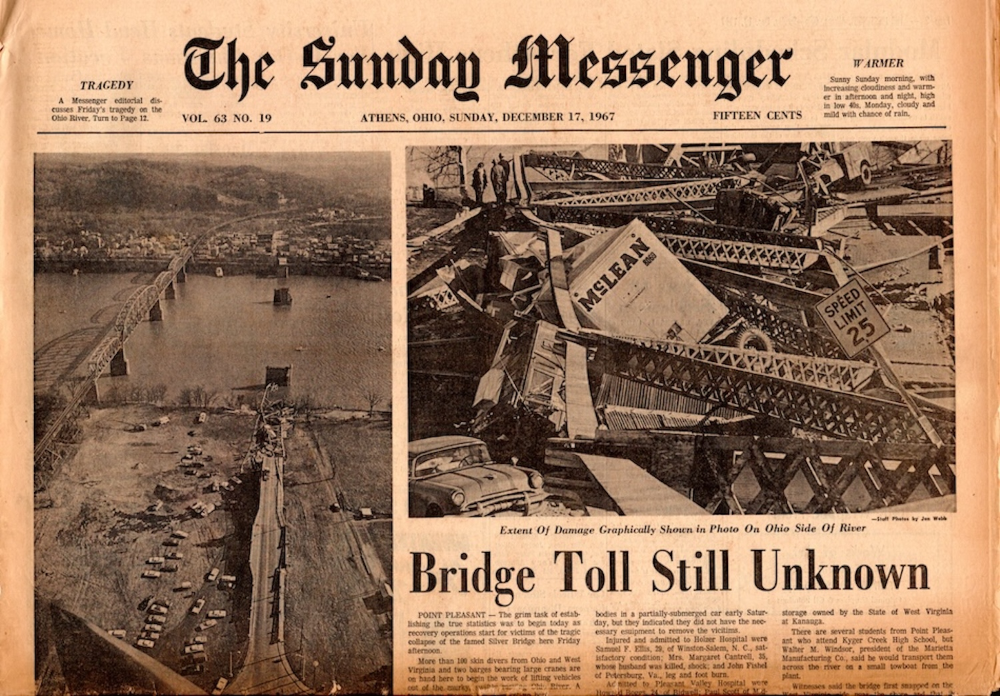
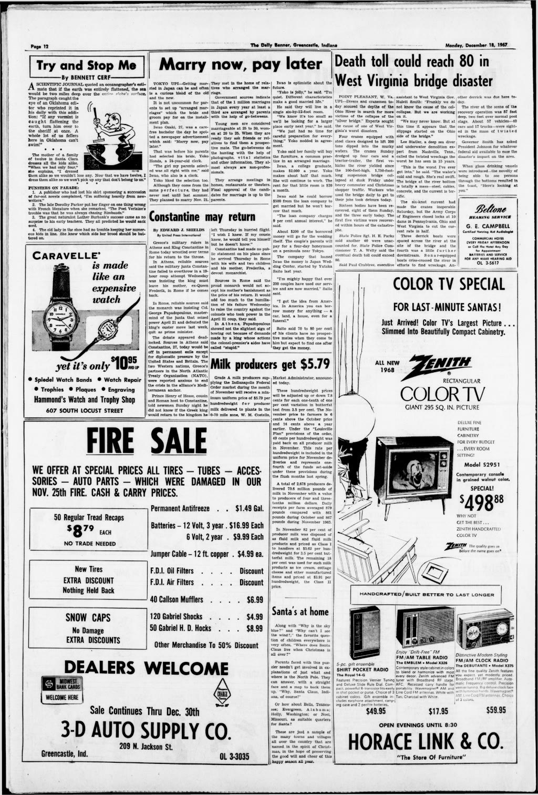

HN HN-666 · December 18, 1967 · Disasters, Accidents & Emergencies > Building & Infrastructure Collapses > Bridges
Silver Bridge December 1967: Point Pleasant Register 18 Dec lists 16 dead/44 missing; Charleston Gazette-Mail 17 Dec 8 dead/46 missing; Charleston Daily Mail 16 Dec 'may reach 46'.
Source: The Daily Banner, p. 12 — original page; National Transportation Safety Board, bridge-collapse inquiry.
Report: “Death toll could reach 80 in West Virginia bridge disaster†described cranes and divers searching the Ohio River after the December 15 collapse at Point Pleasant.
Assessment: A forecast of possible deaths, not a count of recovered victims. The recognized toll was 46. The formal investigation identified failure of a fractured eyebar in the suspension-chain structure. The sensational upper estimate and later structural finding answer different questions: how many may be missing versus why the bridge failed.
Class: Printed differences (V)
Recorded difference/concern: Silver Bridge December 1967: Point Pleasant Register 18 Dec lists 16 dead/44 missing; Charleston Gazette-Mail 17 Dec 8 dead/46 missing; Charleston Daily Mail 16 Dec 'may reach 46'.
Assessment: All these exact headline leads B via WV archive; DIFFERENT reporting stages and dead/missing fields; needs page reads.
Source links: https://archive.wvculture.org/History/disasters/silverbridge01.html https://archive.wvculture.org/history/notewv/silverbridge.html https://www.johnkeel.com/?p=6008
Authentic images retrieved from John Keel collection (The Athens Messenger scans) and Hoosier State Chronicles (Indiana State Library). Article crops are located using the archive's own OCR word coordinates and rendered at native crop resolution; article clips are assembled from the archive's own article-block images; page images marked "archive tiles" are stitched from the archive's own tiled page service at its 256-px tile cap; page images marked "issue PDF" are single pages rasterised from the archive's own issue PDF, with the page chosen by matching the headline against the PDF's text layer; page scans are reduced-size access renditions. No images were generated, mocked, or retouched.


Not yet acquired. Queued for provider-specific acquisition testing (see source-acquisition manifest).
URL (preserved verbatim): https://newspapers.library.in.gov/?a=d&d=TDB19671218-01.1.12
Saved research report: Historical_Newspaper_Event_Research_653-677_2026-10-23.md
Evidence note: A newspaper report means a historical publication made a claim; it does not establish that claim as fact. Contemporary reporting is separated from later scholarly context and our own assessment.